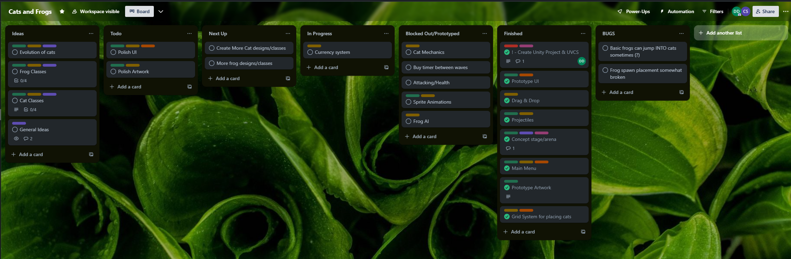
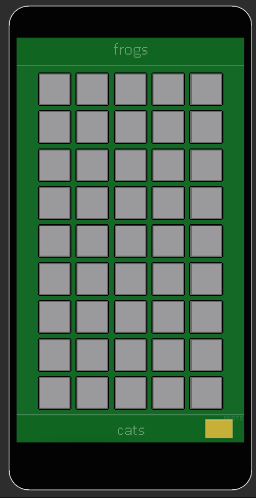
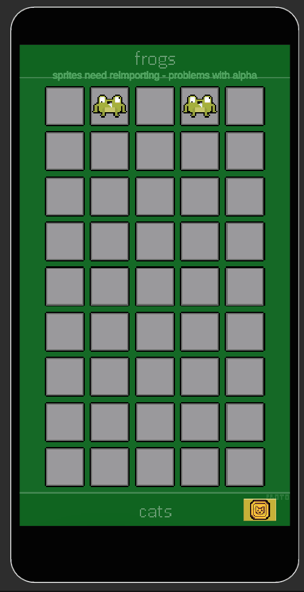
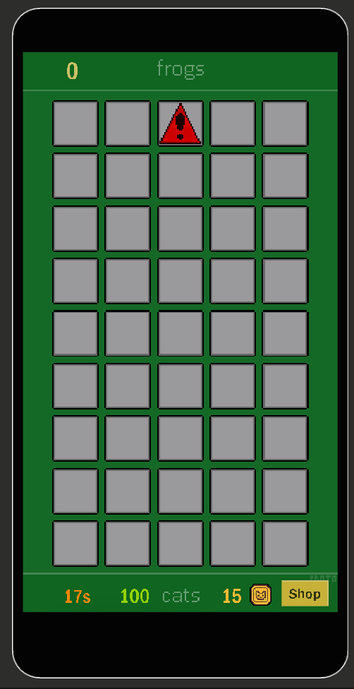

Cats and Frogs - Group Game Project
Overview
2D Tower Defense
Date Started: 28th January 2025
My Role: Developer & Concept Artist
Software Used: Unity, C#, Aseprite
Download APK
GitHubSection 1 | Conception & Goal
1.1 Introduction & Goal
This is a Group Game Project made in Year 1, Semester 2.
The goal is to develop a functioning prototype of a game. The brief was as follows:
"Working in teams, create a tower defense game targeted at mobile devices, with high performance."
My role in this project was as Developer.
I worked in a team of 1 Developer and 2 Artists/Designers. However we all concepted our project as a group.
1.2 Concept and Inspiration
As a team we initally came together and brainstormed ideas for our project, the only restriction in the brief was that it needs to be a tower defense mobile game.
After choosing the tower defense brief, we gathered all of our ideas together to decide on the concept of the game. After some time of brainstorming, we concluded that we would like our game to draw heavy inspiration from Plants vs. Zombies, but be adapted into a vertical format, with retro design elements.
As a team, together, we found some reference art online:


We then developed the ideas into a final setting concept: The towers in this game would be Cats, and the enemies would be Frogs, and the goal is to defend a pond from the waves of incoming frogs. You can place cats that have weapons, such as pistols, and there is also a cat type that rummages through a bin and gathers coins every so often.
We then gathered on Discord and quickly developed concept art for what we want the game to look like, and the art style, for example:
1.3 Tools and Software
Unity
Unity is the game engine we chose to use, due to its familiarity and stength of 2D tools and workflow
Trello
Trello is a visual project management tool that uses boards, lists, and cards to help individuals and teams organise tasks and collaborate efficiently. We used this to manage tasks and share the workload
Aseprite & Libresprite
The artists used mainly Aseprite and Libresprite. These are both pixel art programs, Libresprite is a free fork of Aseprite, and they are intercompatible.
1.4 Programming
Before I began programming, I setup a new Unity project, installed all the necessary packages (e.g. 2D tools) and created a GitHub repository to use as our version control software.
My Responsibilities
As the sole developer, I planned my own schedule, and broke down the key features needed for a working prototype into the allotted time.
Development Timeline Overview:
Week 1: Conceptualisation - Research, concept art - Solidify gameloop and concept Week 2: Grid & Drag and Drop - Drag and Drop using Touch - Placement of objects on the grid Week 3: Cats and Frogs - Create Scriptable Objects for both entity classes - Movement - Attacking Week 4: Health - Create health - Destroy entities on death Week 5: Shop - Create functional shop - Fix bugs - Functional UI Week 6: End of Year Show and individual reflections
We used Trello to track our tasks:
- Grid System -
My first task was to develop the grid system that would be fundamental to the games mechanics.
My first iteration of the grid system was very simple, only allowing for placement and removal of a temporary prefab. [1.4.1]
I first created a demo scene with containers in a Grid Layout Group, with a BoxCollider2D, and the GridSquare tag.
The occupancy of each Grid Tile is tracked in a Dictionary which contains both the Vector2 position and GameObject of
each deployed entity.
private static Dictionary occupiedPositions = new Dictionary();
public static void OccupyPosition(Vector2 position, GameObject obj)
{
occupiedPositions[position] = obj;
}
 1.4.1
1.4.1
void Update()
{
if (Input.touchCount > 0 && Input.GetTouch(0).phase == TouchPhase.Began)
{
Vector2 touchPosition = Input.GetTouch(0).position;
Vector3 worldPosition = Camera.main.ScreenToWorldPoint(new Vector3(touchPosition.x, touchPosition.y, -Camera.main.transform.position.z));
worldPosition.z = 0;
LayerMask gridLayerMask = LayerMask.GetMask("TileGrid");
RaycastHit2D hit = Physics2D.Raycast(worldPosition, Vector2.zero, Mathf.Infinity, gridLayerMask);
if (hit.collider != null && hit.collider.gameObject.CompareTag("GridSquare"))
{
Transform gridSquare = hit.collider.transform;
if (gridSquare.childCount == 1 || gridSquare.childCount == 0)
{
GameObject spawned = Instantiate(prefabToSpawn, gridSquare.position, Quaternion.identity);
spawned.transform.parent = gridSquare;
}
else
{
foreach (Transform child in gridSquare)
{
if (child.CompareTag("Cat"))
{
Destroy(child.gameObject);
}
}
}
}
}
}
I also created a separate scene, where I developed the Drag-and-Drop system, another key mechanic. I ended up creating a DragManager.cs, which handles whether dragging is allowed, if the player is currently dragging, etc.
public static class DragManager
{
public static bool isDragAllowed;
public static bool isDragging;
public static GameObject dragObject;
public static int currentDraggingId = -1;
}
I separated out the touch functions from the grid system to a TouchManager.cs to separate concerns. This invokes Unity Events that are used by all scripts involving touch input.
private void Update()
{
if (Input.touchCount <= 0) return;
Touch touch = Input.GetTouch(0);
Vector3 touchPosition = Camera.main.ScreenToWorldPoint(touch.position);
touchPosition.z = 0;
switch (touch.phase)
{
case TouchPhase.Began:
currentTouchedObject = GetTouchedObject(touchPosition);
OnTouchBegan?.Invoke(touchPosition, touch);
break;
case TouchPhase.Moved:
OnTouchMoved?.Invoke(touchPosition, touch);
break;
case TouchPhase.Ended:
case TouchPhase.Canceled:
OnTouchEnded?.Invoke(touchPosition, touch);
currentTouchedObject = null;
break;
}
}
The Drag-and-Drop function is handled by CardDragger.cs, each shop tile has its own instance of this script. When the shop tile is touched, if the requirements are met, it instantiates a preview image on the UI layer (to allow for smooth movement with the pixel perfect camera) which tracks the touch position, when let go, if it is over a grid square, ShopSpawnScript.cs handles spawning and deployment of the Cat.
private void HandleTouchBegan(Vector3 touchPosition, Touch touch)
{
if (!CameraController.atShop || !DragManager.isDragAllowed)
return;
if (TouchManager.Instance.IsObjectTouched(gameObject, touchPosition) && canAfford)
{
DragManager.isDragging = true;
DragManager.currentDraggingId = instanceId;
shopSpawnScript.SpawnPreviewCat(touchPosition);
}
}
private void HandleTouchEnded(Vector3 touchPosition, Touch touch)
{
if (!DragManager.isDragging || DragManager.currentDraggingId != instanceId)
return;
RaycastHit2D hit;
if (TouchManager.Instance.RaycastOnLayer(touchPosition, gridLayer, out hit))
{
Vector2 gridPosition = hit.collider.transform.position;
if (!ContainerHandler.IsPositionOccupied(gridPosition))
{
DragManager.isDragging = false;
shopSpawnScript.RemovePreviewCat();
shopSpawnScript.DeployCat(gridPosition);
CurrencyManager.Instance.SpendMoney(cost);
ContainerHandler.OccupyPosition(gridPosition, shopSpawnScript.GetSpawnedObject());
}
else
{
DragManager.isDragging = false;
shopSpawnScript.RemovePreviewCat();
Debug.LogWarning("Position already occupied");
}
}
else
{
DragManager.isDragging = false;
shopSpawnScript.RemovePreviewCat();
Debug.LogWarning("Placement outside of grid not allowed");
}
}
void LateUpdate()
{
if (DragManager.isDragging && DragManager.currentDraggingId == instanceId && Input.touchCount > 0)
{
Vector3 TouchPosition = Camera.main.ScreenToWorldPoint(Input.GetTouch(0).position);
TouchPosition.z = 0;
GameObject spawnedObject = shopSpawnScript.GetSpawnedObject();
if (spawnedObject != null)
{
spawnedObject.transform.position = TouchPosition;
}
}
}
 1.4.2
 1.4.3
1.4.3
When developing this, I encountered bugs such as the preview not tracking to the touch position correctly, and the wrong Cat types being shown.
I fixed these by moving the tracking code into LateUpdate(), which fixed the tracking, and I implemented the checking of instanceID to ensure that the dragging is being performed by the correct DragManager.cs
- Scriptable Objects -
To allow for the easy creation of new types/tiers of Cats and Frogs, I decided to use Scriptable Objects to hold the values and data for both the Cats and the Frogs.
Using this, it is easy to create a new entity by only modifying the values in the inspector
e.g. CatSO.cs
public enum CatType
{
Gun,
Melee,
CoinCollector
}
[CreateAssetMenu(fileName = "NewCat", menuName = "Game/Cat")]
public class CatSO : ScriptableObject
{
[Header("Cat Info")]
public string catName;
public float delay;
public float health = 100;
public float waitTime = 1f;
public Sprite idleSprite;
public Sprite altSprite;
public RuntimeAnimatorController animatorController;
[Header("Bullet Settings")]
public float damage = 10;
public float bulletSpeed = 5f;
public bool burstFire = false;
public int maxBurstShots = 3;
public float burstWait = 1f;
[Header("Cat Type")]
public CatType catMode;
}
This allows a developer or artist to easily modify the data for each Cat type. The values are editable in the inspector, and intuitive to modify. [1.4.4]
 1.4.4
1.4.4
When instantiated, the entities take the data from the Scriptable Objects through a setup method. The desired SO is piped in, and the data is taken.
e.g. in CatController.cs
public void SetupCat(CatSO catType)
{
healthScript.health = catType.health;
waitTime = catType.waitTime;
damage = catType.damage;
speed = catType.bulletSpeed;
delay = catType.delay;
burstFire = catType.burstFire;
maxShotsBurst = catType.maxBurstShots;
burstWait = catType.burstWait;
animationController.Initialise(catType.idleSprite, catType.altSprite, catType.animatorController);
if (catType.catMode == CatType.CoinCollector)
{
binCatScript.enabled = true;
binCatScript.InitialiseBinCat(waitTime);
}
else
{
binCatScript.enabled = false;
}
StartCoroutine(AttackAndWait(delay, waitTime));
}
- Frog Controller -
The plan for the movement for the frogs was simple - at a set interval determined by the FrogSO, the frog will jump
one Grid Tile forwards, until it detects a Cat in its way. Whilst it is moving, at another set interval, the frog performs its attack.
The section of code below controls how a frog (enemy) moves in the game. It makes the frog wait for a bit (waitTime) before checking if it can move down a space. If the space isn't blocked, it starts moving toward that spot at a set speed. Once it reaches the spot, it waits again, and the process repeats. Each move reduces the frog's distance to the end, and when it reaches the end (distToEnd is 0), it triggers AtEnd(). It also keeps track of which grid spaces are occupied or cleared.
I chose this approach to create a simple, timed grid-based movement system for the frogs that allows controlled pacing, prevents overlapping, and triggers events when they reach the pond.
This is shown in [1.4.5]
void Update()
{
if (enemyData == null) return;
timer += Time.deltaTime;
if (isWaiting)
{
if (timer >= waitTime)
{
timer = 0f;
nextPosition = new Vector2(transform.position.x, transform.position.y - moveDistance);
if (!ContainerHandler.IsPositionOccupied(nextPosition))
{
isWaiting = false;
nextPosition = new Vector3(nextPosition.x, nextPosition.y, transform.position.z);
ContainerHandler.ClearPosition(currentGridPosition);
}
}
}
else
{
float step = enemyData.moveSpeed * Time.deltaTime;
transform.position = Vector3.MoveTowards(transform.position, nextPosition, step);
ContainerHandler.OccupyPosition(nextPosition, gameObject);
if (Vector3.Distance(transform.position, nextPosition) < 0.01f)
{
transform.position = nextPosition;
isWaiting = true;
timer = 0f;
distToEnd -= 1;
if (distToEnd == 0)
{
AtEnd();
}
currentGridPosition = new Vector2(transform.position.x, transform.position.y);
}
}
}
- Projectiles -
 1.4.5
I had had previous experience with projectile-based weapon fire in my earlier project 3D Top-Down Shooter, and I wanted something similar for this
project, so the projectile system ended up as being an instantiated prefab with scripts that handle movement, collision, and time of life.
The collision is handled by a CircleCollider2D set to Trigger, and when it collides with an object on the Frogs layer, if the tag is "Frog", it
finds the EnemyController.cs script on the collided gameObject, and calls the TakeDamage(float damage) function in the enemyController, then destroys itself.
The collision script also holds a static float for damage, which can be set by calling the SetDamage(float newDamage) function in ProjectileCollision.cs
The firing of projectiles is handled by a script that is on the universal CatPrefab, and is enabled or disabled dependent on the CatType from the CatSO.
Whenit is called in the AttackAndWait() function, it instantiates and sets up the projectile.
public class ProjectileFire : MonoBehaviour
{
[SerializeField] GameObject prefab;
[SerializeField] Transform firePoint;
private ProjectileCollision projCollisionScript;
public void Fire(float damage, float speed)
{
PlaySound();
GameObject projectile = Instantiate(prefab, firePoint.position, Quaternion.identity);
projCollisionScript = projectile.GetComponent();
projCollisionScript.SetDamage(damage);
ProjectileMovement movement = projectile.GetComponent();
if (movement != null)
{
movement.SetupProjectile(damage, speed);
}
}
private void PlaySound()
{
AudioPlayer.Instance.PlaySFX(AudioPlayer.Instance.gunFire);
}
}
- Health -
The way I handled health in the game is very simple. Every entity that has health has the HealthScript.cs component. When the TakeDamage() function is called in the respective Controller, it then calls the TakeDamage() in the HealthScript, along with checking whether the health is <= 0 and executing the correct code.
public class HealthScript : MonoBehaviour
{
public float health;
public void TakeDamage(float damage)
{
health -= damage;
AudioPlayer.Instance.PlaySFX(AudioPlayer.Instance.hurt);
}
public void AddHealth(float healthToAdd)
{
health += healthToAdd;
}
public float GetHealth()
{
return health;
}
}
- Shop & Currency -
 1.4.6
Each ShopTile has its own ShopSpawnScript.cs component which handles the spawning and deployment of Cats into the grid, by instantiating the prefab at the Vector2 position of the Grid Tile if it isn't occupied, and then occupying the space using the previous
OccupyPosition() function.
It then calls the SetupCat() method and passes through the designated CatSO, which is defined in the inspector of the Shop Tile.
This happens if the player has enough Currency, which is managed in a CurrencyManager.cs.
void Awake()
{
if (Instance == null)
{
Instance = this;
DontDestroyOnLoad(gameObject);
}
else
{
Destroy(gameObject);
}
GameUIMgr = FindObjectOfType();
SendCointCountToUI();
OnBalanceUpdated?.Invoke(coinCount);
}
public void SetMoney(int newCoinCount)
{
coinCount = newCoinCount;
OnBalanceUpdated?.Invoke(coinCount);
SendCointCountToUI();
}
private void SendCointCountToUI()
{
GameUIMgr.UpdateCoinCount(coinCount);
}
public void SpendMoney(int moneySpent)
{
coinCount -= moneySpent;
OnBalanceUpdated?.Invoke(coinCount);
SendCointCountToUI();
}
public int GetCoinCount() { return coinCount; }
public void UpdateCurrency()
{
OnBalanceUpdated?.Invoke(coinCount);
}
I implemented a persistent currency manager using the singleton pattern to ensure only one instance exists across scenes. This system centralizes coin tracking, automatically updates the UI on value changes, and broadcasts coin balance updates via an event system (OnBalanceUpdated). It includes methods to set, spend, and retrieve the coin count, ensuring clean integration with other systems like the game UI. This approach provides modularity and scalability.
1.5 Reflection
Development of Cats and Frogs ran mostly smoothly. I kept pace with the schedule that I had planned for myself, and achieved the majority of my goals to a reasonable standard. When it came time to present our game, my tutor referred to it as a "medium-fidelity final product"
This shows that we successfully developed a working tower-defense game for Android devices that performs well on real hardware and is a fully playable game. Whilst we achieved what the brief required of us, there are a lot of improvements that could've been made along the way.
Limitations/Failures
As with all development projects, some things didn't go as planned, and are a valuable learning experience.
Being a solo developer entirely eliminates the problem of poor communication, which is a positive. However, it also led to a lot of poor code organisation, as well as rushing some key features. This is in part due to the high workload as the sole developer, but also
due to poor planning of systems and their interactions, due to lack of experience. This led to a lot of technical debt, meaning that it would be unecessarily difficult to expand on this game to completely polish and finish it, as some systems would ideally be completely rewritten and re-thought-out.
The art team were not fully aware of exactly what sprites and images were needed at what time. This led to me having to create some prototype artwork for the UI - this led to a lack of focus and a lack of time - contributing to the somewhat rushed systems. This could have been prevented with better inter-team communication.
A personal failure of mine is that I spent too long working on the drag and drop system. Whilst it is vital to the game, so having a rigid drag and drop system is very important, I could have used an asset from the Unity Asset store instead, and spent more time working
on the bespoke systems, both refining them and creating more in-depth gameplay.
The prototype focused on core mechanics, lacking advanced features such as more varied enemy types/classes or power-ups. UI elements could benefit from enhanced visual feedback and animations.
The majority of the shortcomings of Cats and Frogs boil down to poor planning and poor time management, which is something I need to work on for future projects. It is entirely possible to fix these issues in Cats and Frogs, and allow for it to be expanded into a full-fledged game, by reworking the core systems from the ground up. Despite this, the project reached its goals in the allotted time.
Based on these limitations I think a further 6 weeks of focused development time left would be enough to make everything functional and scalable, as intended. I also think that a further 1-2 weeks on top of that would be necessary if we
want the game to have significant polish.
Areas I need to research include UI and UX design for mobile games, as well as mobile performance optimisation and profiling. This would allow me to design intuitive and engaging interfaces specifically tailored for mobile platforms, and ensure that my games can run
smoothly on even low-end devices, and I can use that knowledge of memory management and efficient rendering techniques in all aspects of gamedev.
Further, I definitely need to research into system planning. Effective system planning ensures that a game's mechanics are not only cohesive and functional, but easier to build on top of and add new features. This would have helped in this project as I would have been able to add all the planned enemy types, such as long-ranged Wizard Frogs, and bosses with special attacks.

1.6 Further Development
Following my reflection, I have outlined a plan that I could follow to rework the game from the ground up:
Sprint 1:
- Strip game down to its core mechanics, preserving best-performing scripts
- Replace Touch Handling with a more optimised premade asset
- Redesign and rewrite grid system for performance
- Rewrite placement system to make more intuitive
Sprint 2:
- Using the new grid and placement, rewrite the shop spawning to be controlled by a single manager
- Rework player and Enemy Controllers
- Rewrite attack system
Sprint 3:
- Polish up previous scripts
- Create all new types of entities
- Polish UI
1.7 Key Tasks & Dependencies
Art: Must be completed before main menu & UI can be polished, before sprite animations can be finalised, and before background elements can be added.
Shop System: Must be entirely reworked before expanding scope, as it is very hard to build upon right now.
Animations: I could not get sprite animations working correctly, this needs to be fixed before the game can be considered polished.
References
[1.2.1] How to Make a Pixel Art Frog (2023). [Art]. Go Real Games, LLC. Retrieved from https://www.megavoxels.com/learn/how-to-make-a-pixel-art-frog/
[1.2.2] Pixel Art Top Down - Basic. [Art]. Cainos. Retrieved from https://cainos.itch.io/pixel-art-top-down-basic/
[1.2.4] This is Pixel Art 32 (2024). [Art]. The_PixelPrysm. Retrieved from https://www.reddit.com/r/PixelArt/comments/1aprcl3/this_is_pixel_art_32/